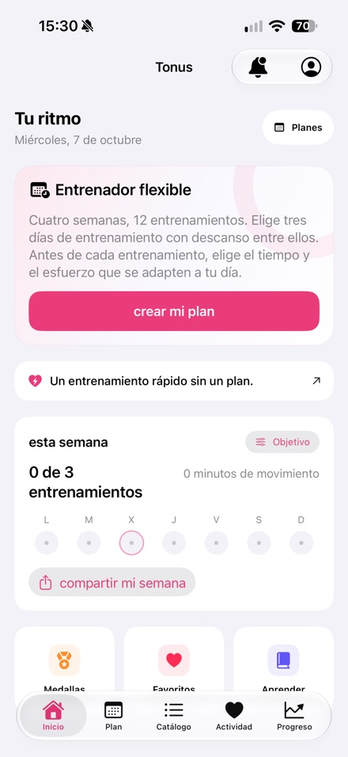
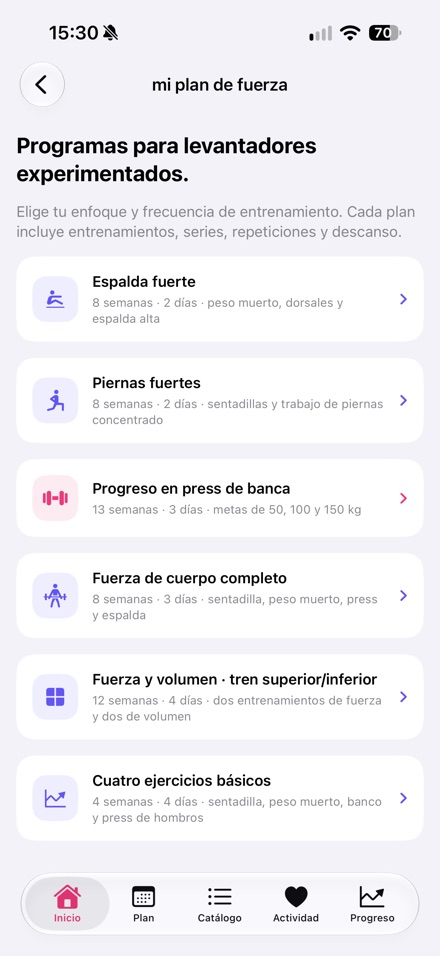
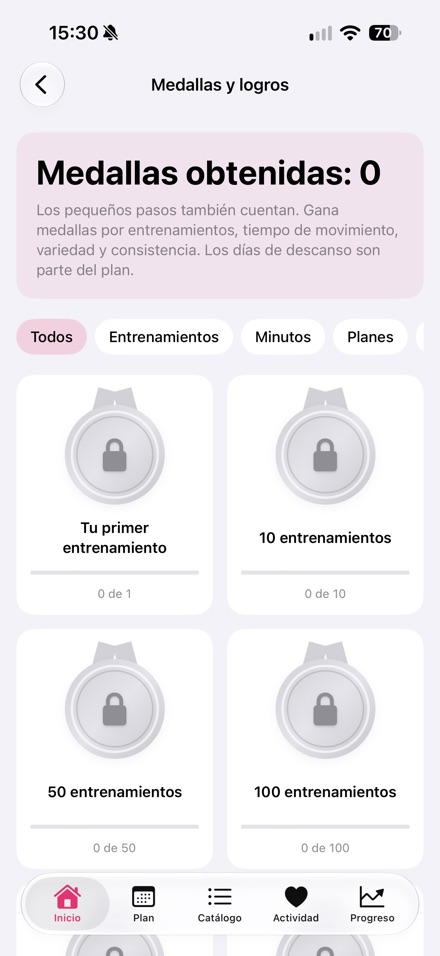

Nikita Revin, desarrollador de Tonus · Actualizado el 16 de octubre de 2026
Datos del desarrollador y capturas de la versión publicada para preparar una reseña de la aplicación.
Kit de prensa
El archivo contiene información del producto, el icono y tres capturas de la versión publicada en español.
Descargar el kit de prensa (.zip)Tonus 1.4
- iPhone con iOS 17 o posterior.
- Acceso gratuito, sin registro, suscripciones ni compras integradas.
- Entrenamientos en casa de 5, 10 o 20 minutos, con opciones sin saltos, de pie y sin equipamiento.
- Entrenador flexible con 12 sesiones en los días elegidos; las sesiones pendientes se trasladan y se conservan las completadas.
- Seis programas de fuerza para el gimnasio, dirigidos a personas con experiencia en levantamiento de pesas.
- Integración opcional con Apple Salud e historial de entrenamientos guardado localmente.
- Los planes y las instrucciones escritas funcionan sin conexión; los vídeos requieren internet.
- Vídeos de 60 ejercicios. Los servicios externos de vídeo pueden mostrar sus propios anuncios.
- Interfaz disponible en español.
Capturas de la App Store






Contacto del desarrollador
Nikita Revin · nik007rev@gmail.com